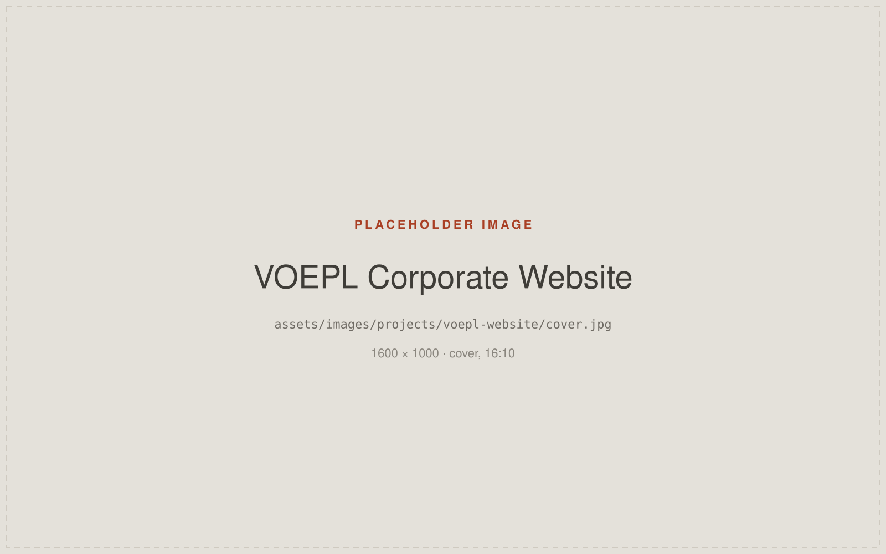
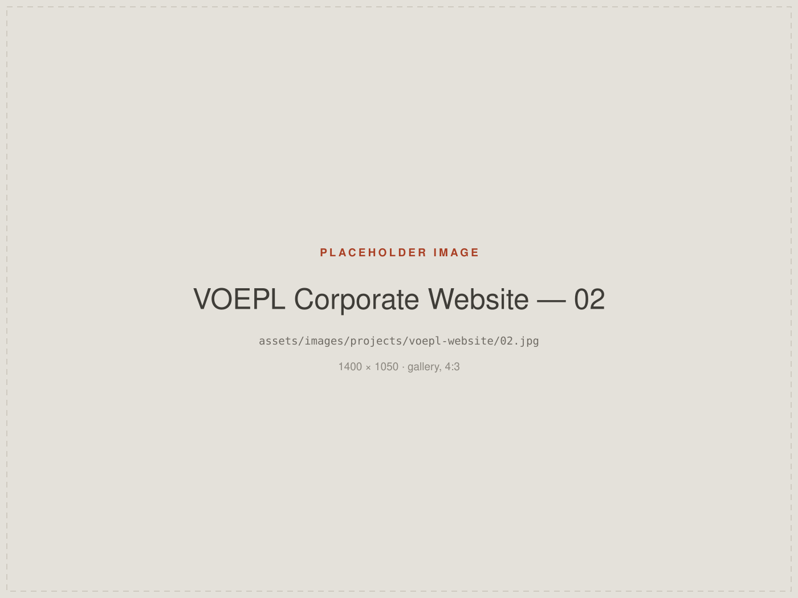

Building a Corporate Digital Presence
Contributing to the digital presence of an Indian OEM/ODM manufacturing company by working across website design, content structure, digital communication and ongoing optimisation.
- Role
- Digital Marketing Executive — design, web and communication
- Organisation
- Virtuoso Optoelectronics Limited (VOEPL)
- Disciplines
- Web Design · UX · Information Architecture · Odoo · SEO
- Areas of work
- Website design, publishing and maintenance; responsive layouts; product and capability presentation

Context
Virtuoso Optoelectronics Limited (VOEPL) is an Indian OEM/ODM manufacturing company. Its website is the first place prospective customers, partners and candidates go to understand what the organisation actually makes and what it is capable of.
I joined the in-house team working on that digital presence, and contributed across the site's design, its structure and the ongoing work of keeping it current.
Challenge
A manufacturing website has to do several jobs at once. It needs to present manufacturing capability, a product range and organisational credibility — to readers whose technical knowledge varies enormously, from procurement teams to engineers to first-time visitors.
The design problem is therefore mostly a structural one: deciding what belongs on which page, in what order, and how much detail a visitor should meet before they have to ask for more.
Role
This was collaborative, in-house work. The areas below are the ones I contributed to — not a claim to have delivered the site alone.
- Website design
- Website publishing and maintenance
- Information architecture
- Product and capability presentation
- Responsive design
- Odoo implementation
- HTML, CSS and JavaScript work
- SEO support
- Technical website optimisation
Approach
Structure before surface
Work started with how the information wanted to be organised — the relationship between capabilities, products and company information — rather than with page decoration.
Designing inside a platform
The site is built and maintained on Odoo, so design decisions had to survive contact with a real CMS. Working directly in HTML, CSS and JavaScript where the platform's own components fell short kept the layouts closer to the intended design.
Responsive as a requirement, not a pass
Layouts were treated as needing to work at each size rather than simply shrink, with particular attention to how dense product and capability information behaves on a phone.
Maintenance as part of the design
Because I also published and maintained the site, patterns that were quick to update correctly mattered as much as how they first looked.
Selected work
Placeholders below. Replace with real screens — see
ASSETS.md for filenames and dimensions.

Outcome
Outcome to be provided — only verifiable results will be published here. If no measurable outcome can be shared, this section will be removed rather than filled with estimates.